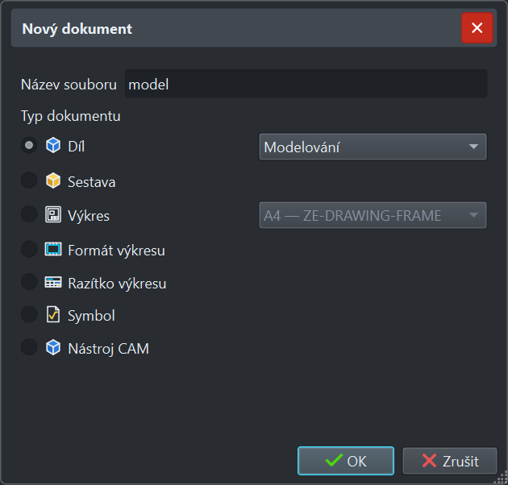
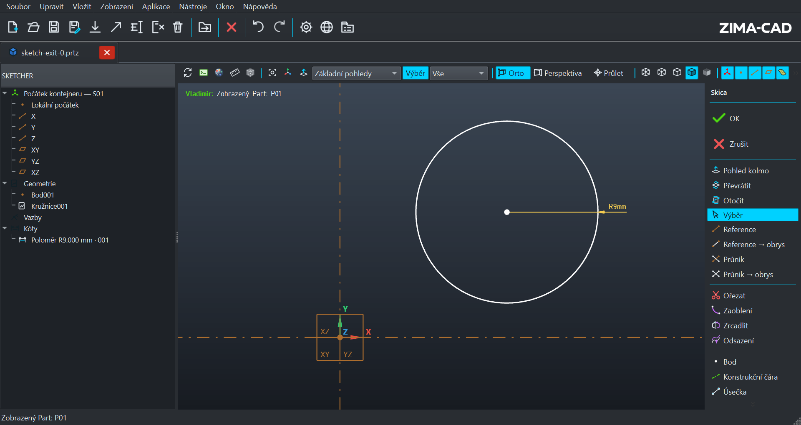
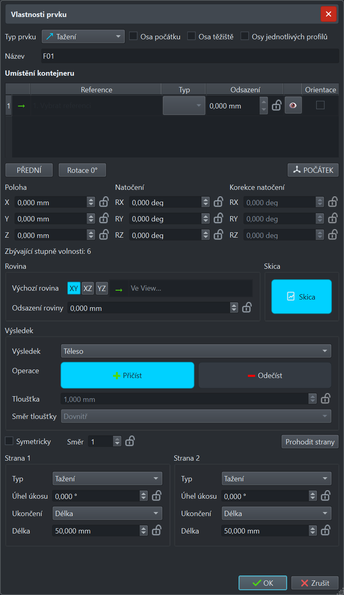
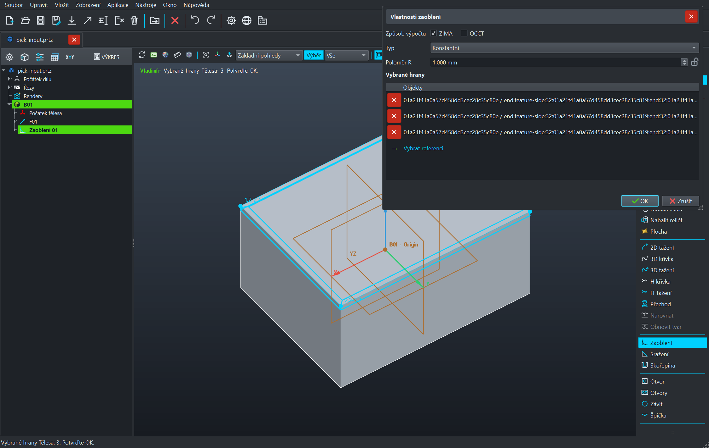
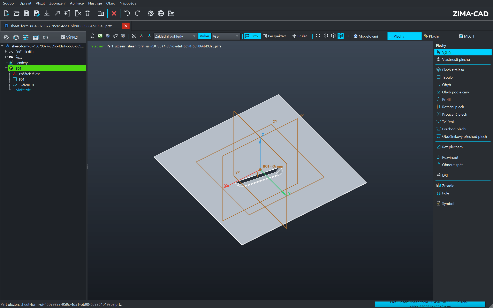
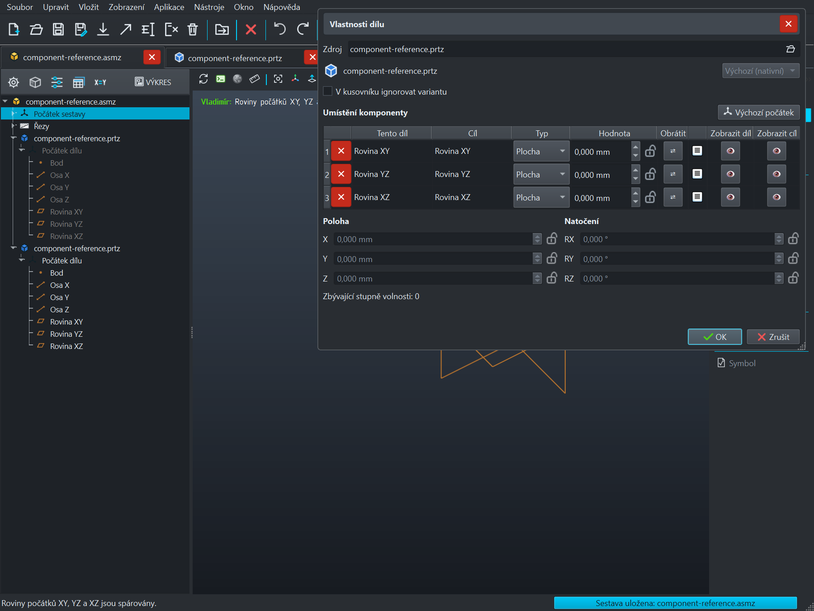
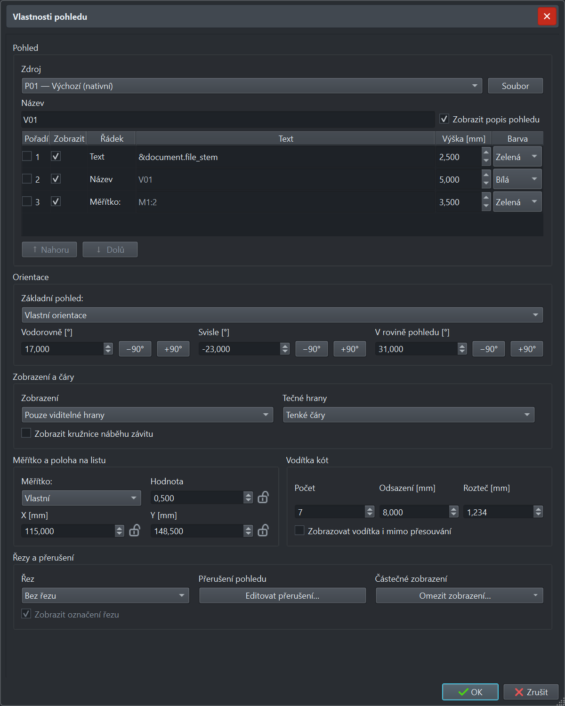
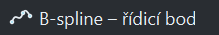
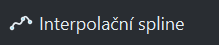
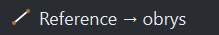

ZIMA-CAD / Návody
Najděte svůj další krok.
Obrázkové návody k jednotlivým funkcím. Stejné návody na webu i přímo v ZIMA-CADu.
Počet návodů: 157
Úvodní návody

ZačínámeOtevřít návod
SkicaOtevřít návod
Vysunutí a rotaceOtevřít návod
Zaoblení a zkoseníOtevřít návod Tažení profiluOtevřít návod
Tažení profiluOtevřít návod
Plechové dílyOtevřít návod
SestavyOtevřít návod
VýkresyOtevřít návod FEMOtevřít návod
FEMOtevřít návod RenderOtevřít návod
RenderOtevřít návod CAMOtevřít návod
CAMOtevřít návodSpolečné příkazy
3D ovladačeNastavte 3D ovladač pro pohyb kamery a spouštění existujících příkazů CADu.Otevřít návodPoleOpakuje odkazovaný zdroj v lineárním nebo kruhovém poli.Otevřít návod SymbolVkládá nativní knihovní symbol do skici nebo jako anotaci modelu.Otevřít návodVytvořit CAMVytvoří nastavení CAM pro obrábění polotovaru na cílový tvar.Otevřít návodVytvořit renderVytvoří renderovací těleso se společnou scénou pro vypočtená tělesa dílu.Otevřít návodVytvořit řezVytvoří uložený řez pro prohlížení dílu nebo sestavy.Otevřít návodVýběrZapíná běžný výběr objektů v modelovém pohledu.Otevřít návodZpět do sestavyUkončuje úpravy aktivovaného zdrojového dokumentu uvnitř zobrazené sestavy.Otevřít návodZrcadloVytváří odkazovanou zrcadlenou kopii zdrojového solidu, tělesa nebo komponenty.Otevřít návod
SymbolVkládá nativní knihovní symbol do skici nebo jako anotaci modelu.Otevřít návodVytvořit CAMVytvoří nastavení CAM pro obrábění polotovaru na cílový tvar.Otevřít návodVytvořit renderVytvoří renderovací těleso se společnou scénou pro vypočtená tělesa dílu.Otevřít návodVytvořit řezVytvoří uložený řez pro prohlížení dílu nebo sestavy.Otevřít návodVýběrZapíná běžný výběr objektů v modelovém pohledu.Otevřít návodZpět do sestavyUkončuje úpravy aktivovaného zdrojového dokumentu uvnitř zobrazené sestavy.Otevřít návodZrcadloVytváří odkazovanou zrcadlenou kopii zdrojového solidu, tělesa nebo komponenty.Otevřít návod
Tělesa a odvozené výsledky
Modelování
2D taženíTáhněte staniční profily po vlastní rovinné dráze.Otevřít návod3D křivkaDefinujte prostorovou dráhu pomocí trvalých nativních bodů.Otevřít návod3D taženíTáhněte profily po prostorové dráze určené body.Otevřít návodBodVytvořte trvalý referenční bod v počátku prvku.Otevřít návodH křivkaVytvořte samostatnou šroubovicovou dráhu bez taženého průřezu.Otevřít návodH-taženíTáhněte průřez po řízené šroubovicové dráze.Otevřít návodKrutZkruťte vyplněný profil podél jeho těžišťové osy.Otevřít návodNabalit reliéfVytvořte vystouplý nebo zapuštěný materiál z nabalených uzavřených obrysů.Otevřít návodNabalit skicuNabalte rovinnou skicu na podporované analytické plochy.Otevřít návodNarovnatVypočtěte narovnaný stav podporovaných tvarovaných objemových prvků.Otevřít návodObnovit tvarObnovte původní tvar po narovnání objemových prvků.Otevřít návodOsaVytvořte konečnou referenční osu s nezávisle řízenými konci.Otevřít návodOtvorVytvořte hladký nebo vnitřně závitový otvor jednou operací.Otevřít návodOtvoryVyřízněte válcové kanálky podél úseček skici.Otevřít návodPlochaVytvořte rovinnou plochu ohraničenou vlastní skicou.Otevřít návodPromítnout reliéfPřidejte nebo odeberte reliéf promítnutím vyplněné skici.Otevřít návodPromítnout skicuPromítněte rovinnou skicu na vybrané plochy.Otevřít návodPrvekDefinujte referenční geometrii nebo profilový prvek v jednom dialogu.Otevřít návodPřechodVytvořte přechod přes vlastní rovinné profilové skici.Otevřít návodRotaceOtočte profil kolem jeho vytvořené konstrukční osy.Otevřít návodRovinaVytvořte odsazenou referenční rovinu pro další operace.Otevřít návodSkicaVytvořte vlastní rovinnou skicu jako referenční prvek.Otevřít návodSkořepinaVyprázdněte vypočtené objemy směrem dovnitř při zachování tloušťky stěny.Otevřít návodSraženíSrazte vybrané vstupní hrany pomocí vzdáleností nebo úhlu.Otevřít návodTaženíVytáhněte profil do objemu, plochy nebo tenkostěnné geometrie.Otevřít návodZaobleníZaoblete vybrané hrany skutečného vstupního objemu nebo sešité skořepiny.Otevřít návodZávitPřidejte kosmetický vnější závit na válcovou hřídel.Otevřít návodŠpičkaPřidejte kuželové špičky vrtáku ke kruhovým dnům otvorů.Otevřít návod
Plochy
Obecná plochaVytvořte plochu z upravitelných hranic vlastněných jejím kontejnerem.Otevřít návodOříznout plochuZachovejte vybranou oblast vypočtené plochy.Otevřít návodPlochy z tělesaNahraďte vypočtený objem jeho přesným povrchem s nulovým objemem.Otevřít návodPrůsečík plochVytvořte znovu použitelné průsečné křivky a izolované kontaktní body.Otevřít návodSešít plochySpojte vypočtené plošné díly do jedné spojené skořepiny.Otevřít návodZaplnit plochuVyplňte uzavřený obvod pomocí referencí na existující hranice.Otevřít návodZesílit plochuPřeveďte volnou plochu nebo spojenou sešitou skořepinu na materiál.Otevřít návod
Strojní prvky
Plechové díly
DXFExportujte výrobní obrys aktivního plechového tělesa do DXF.Otevřít návodKroucený plechVytvořte parametrický kroucený pás plechu bez úprav skici.Otevřít návodObdélníkový přechod plechuSpojte dvě obdélníkové obálky přechodem plechu ve tvaru L nebo U.Otevřít návodOhnout zpětVraťte způsobilé rozvinuté oblasti plechu do ohnutého stavu.Otevřít návodOhybVytvořte obloukový ohyb plechu s upravitelnými koncovými šířkami.Otevřít návodOhyb podle čáryOhněte plechový materiál kolem konečné čáry skici.Otevřít návodPlech z tělesaZrekonstruujte podporovanou plechovou geometrii z vypočteného objemu.Otevřít návodProfilRozviňte rovinnou dráhu do běžných podřízených tabulí a ohybů.Otevřít návodPřechod plechuSpojte půlkruhový profil s otevřeným zaobleným půlobdélníkem pomocí plechových stěn a ohybů.Otevřít návodRotační plechVytvořte válcový nebo kuželový plech rotací úsečky.Otevřít návodRozvinoutVytvořte rozvinutý stav historie způsobilých oblastí plechu.Otevřít návodTabuleVytvořte rovnou tabuli z uzavřené skici.Otevřít návodTvářeníVložte nativní knihovní tváření do plechového materiálu.Otevřít návodVlastnosti plechu…Nastavte společné výchozí hodnoty plechu v dílu.Otevřít návodŘez plechemProřízněte místní tloušťku zasažených oblastí plechu.Otevřít návod
Skica



Sestavy
Nabalit křivkuNabaluje vlastní rovinnou skicu na analytické plochy jako křivky sestavy.Otevřít návodPromítnout křivkuPromítá rovinnou skicu na vybrané plochy jako referenční křivky sestavy.Otevřít návodVložit komponentuVkládá existující díl nebo podsestavu jako odkazovanou komponentu.Otevřít návodVytvořit komponentuVytvoří nový zdrojový díl nebo podsestavu a vloží je do aktivní sestavy.Otevřít návod
Výkresy
DXFRychle exportuje právě aktivní výkresový list do DXF.Otevřít návodKótaVytváří měřenou výkresovou kótu svázanou s geometrií pohledu.Otevřít návodPDFRychle exportuje celý výkres do PDF v nastavené relativní složce.Otevřít návodPozicePřidává číselné pozice odpovídající první úrovni kusovníku listu.Otevřít návodSymbolVkládá knihovní symbol přímo jako anotaci výkresového listu.Otevřít návodTextPřidává běžný víceřádkový text přímo na výkresový list.Otevřít návodVložit detail…Vytváří zvětšený detail vymezené oblasti existujícího pohledu.Otevřít návodVložit pohledVkládá nový základní pohled z vybraného zdroje výkresu.Otevřít návodVložit přerušeníVkládá mezeru do vynášecí čáry měřené výkresové kóty.Otevřít návodVložit zalomeníVkládá zalomení do vynášecí čáry měřené výkresové kóty.Otevřít návod VýběrObnovuje běžný výběr pohledů a anotací na výkresovém listu.Otevřít návodZarovnat kótyZarovná rovnoběžné měřené kóty podle první vybrané kóty.Otevřít návodZobrazit / skrýt kóty…Řídí viditelnost původních modelových anotací v jednotlivých výkresových pohledech.Otevřít návodŘetězová kótaVytváří nebo rozšiřuje řetězovou kótu v jednom výkresovém pohledu.Otevřít návod
VýběrObnovuje běžný výběr pohledů a anotací na výkresovém listu.Otevřít návodZarovnat kótyZarovná rovnoběžné měřené kóty podle první vybrané kóty.Otevřít návodZobrazit / skrýt kóty…Řídí viditelnost původních modelových anotací v jednotlivých výkresových pohledech.Otevřít návodŘetězová kótaVytváří nebo rozšiřuje řetězovou kótu v jednom výkresovém pohledu.Otevřít návod
FEM
Bod měřeníUložte bod pro opakované odečítání výsledků FEM.Otevřít návodGenerovat síťVytvořte objemovou síť pro aktuální FEM definici.Otevřít návodLineární statikaSpusťte řešení podle typu analýzy aktivního FEM tělesa.Otevřít návodMěření vzdálenostiPorovnejte původní a deformovanou vzdálenost dvou měřicích bodů.Otevřít návodNapětí von Mises [MPa]Zobrazte ekvivalentní napětí von Mises v MPa.Otevřít návodNastavení sítěNastavte hustotu a řád sítě před jejím vytvořením.Otevřít návodOdečítat výsledkyOdečítejte místní hodnoty zobrazeného FEM výsledku.Otevřít návodPosunutí [mm]Zobrazte velikost mechanického posunutí v milimetrech.Otevřít návodPrůhledný původní tvarPorovnejte deformovaný výsledek s průhledným původním tělesem.Otevřít návodPřehrávač deformaceNastavte vizuální zvětšení a přehrávání deformace.Otevřít návodSílaZadejte směrovou mechanickou sílu v newtonech.Otevřít návodTeplota [°C]Zobrazte vypočítané teplotní pole ve °C.Otevřít návodTlakZatěžte vybranou plochu tlakem v MPa.Otevřít návodVazbaOmezte vybrané posuvy FEM modelu mechanickou vazbou.Otevřít návodVlastnosti FEM tělesaUpravte zdroj a typ analýzy existujícího FEM tělesa.Otevřít návodVytvořit FEMVytvořte FEM těleso navázané na vypočítaný objem v dílu.Otevřít návodZdroj teplaZadejte celkový tepelný výkon působící na vybranou oblast.Otevřít návodZobrazit deformaciZapněte nebo vypněte zobrazení platného výsledku FEM.Otevřít návodZobrazit minimum / maximumOznačte nejmenší a největší hodnotu zobrazené výsledkové veličiny.Otevřít návodZobrazit síťZapněte nebo vypněte zobrazení již vytvořené FEM sítě.Otevřít návod
Render
Galerie renderůOtevírá galerii a dostupný výsledek aktivního renderovacího tělesa.Otevřít návodKameraPřidává kameru do aktivního renderovacího tělesa.Otevřít návodReflektorPřidává směrovaný reflektor s nastavitelným světelným kuželem.Otevřít návodSluncePřidává směrové sluneční osvětlení renderovací scény.Otevřít návodSvětloPřidává bodové světlo do společné renderovací scény.Otevřít návodVlastnosti Render tělesaUpravuje zdroje a parametry existující renderovací scény.Otevřít návodVyrenderovat obrázekPočítá obrázek aktivní renderovací scény na pozadí.Otevřít návod
CAM
Žádný návod neodpovídá hledání.